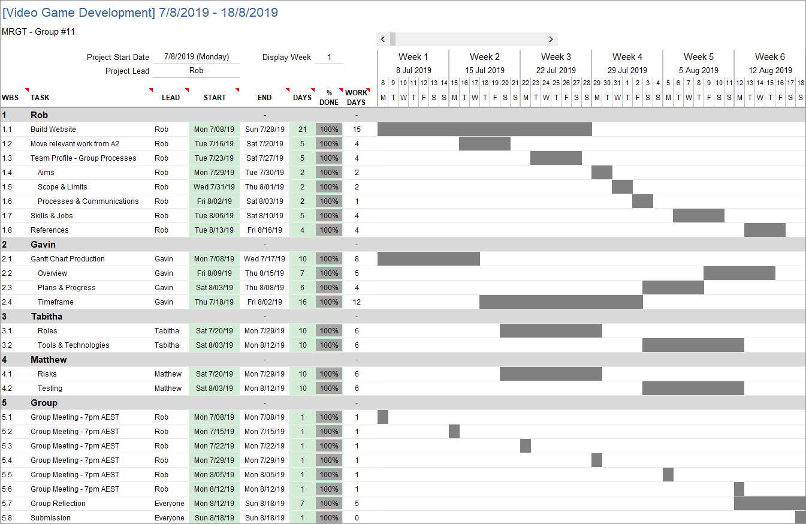

Project Description
Overview
Our team’s project proposition is to plan, design, develop, test and release a fully working 2D side scrolling
platform video game. The team members will be split into separate workloads defined by our timeframes Gantt chart and
design a character that can move, jump and fight through enemies. Once the user has made their way across two well
designed levels without dying more than 3 times, the user’s character or ‘hero’ will engage a boss level and will be
forced into a boss fight. Upon completion of these 3 levels the game will congratulate the user and return to the main
menu prompting the user to play again.
There will be simple game mechanics that our team will have to understand and develop and will do so using the Unity game
development program and the C# programming language. Our team will use a number of development and communication tools
along the way to completing the video game and the effective use of these tools such as level design, character design,
music composition, game engine tools, time management tools and communicative tools will ensure a professionally polished
product that we will all be greatly proud of.
Our team has been playing video games since our childhoods and all of us have fond memories of experiences with varying
games on varying consoles and systems. Due to our group being an older student demographic the generation of games that
we played when we were younger were much older and seemed more engaging, more difficult and much more rewarding in
comparison to today’s generation of video games. This has created great inspiration and motivation to design and develop
and hopefully one day play an old-school game of our own, reminiscent of the “golden days” of video gaming.
While only some of us would continue to further this development in the IT field, the thought of being able to show an
accomplishment such as this to an employer would give all of us a huge sense of value and self-worth, let alone showcase
our ability to work as a team, develop projects within strict timeframes and learn new skills and technologies while doing
so. This above all was enough for us as a group to agree on the video game project and begin planning with great
enthusiasm.
The video gaming industry is an unfathomably large and thriving industry and there are countless gaming products available
and in development. The product we aim to make would be only built for PC due to time constraints however there are thousand
if not tens of thousands of games in the PC market. Not all of these games would be a competitor as our main focus when
comparing other games would be to ensure they are in the same genre and playstyle as our planned video game. Even after
restricting our parameters within this huge industry there are still a number of gaming giants within our genre and style
that we will use not only as motivation and inspiration but as a comparison as to what we wish to and do not wish to achieve
with our own product.
The main differences that our game will have from the others will be its simplicity yet rewarding playstyle. Many games have
long winded story lines that while they may give the user value for money, they become quite repetitive. Our goal with developing
this product is to get the basics right and create a simple yet rewarding game and that alone will separate ourselves from the
majority of video games being release today. One last comparison is the discovery of the rise of microtransactions and pay-to-win
game stores that have emerged over the last decade which will net developers quick and easy money for unfinished and incomplete
products but will, over time, ruin the trust that the users have for the video game industry. Concerning features like these, our
team have decided not to ever travel down that path and will hopefully inspire others to do so too.
Aims
Our team has a small number of goals during the development of this project and each one of these goals will
directly correspond to completing our main aim of achieving a professionally built, working and bug-free 2D side-scrolling
platform game for PC within the 15-week time period. As a group of green yet excited programmers, we aim to work as a team to
perfect our programming skills, communications skills and understanding of all the tools associated with the development
of a video game.
One of our team's primary goals is to successfully build a game with a minimum of two working levels and a working boss
battle level. This could have been extended to much more than just three levels in total however the limitations of the
project would not allow the development of any extra content such as this. Keeping the goal as simple as possible is vital
in ensuring a professionally and competent product is successfully completed within the strict constraints of the
project.
Another important goal that our team will need to accomplish in order to successfully complete this project is to continue
to gain and improve our programming skills that we've learnt so far during our time in this IT course. While we have been
studying Introduction to Information Technology, our team has also been studying Introduction to Programming, which has
taught us invaluable or priceless programming skills and techniques. While we have only been learning the Java language,
the team has learned crucial core programming concepts and fundamentals that are used across all programming languages.
Continued study and understanding of the Java language and the learning of a new language in C# for the required code in
the Unity game development program will allow our team to achieve our main aim of the project.
A similar goal to the one above is continue to gain and improve our ability to master the use of programming, design and
communication tools and technologies associated with the construction of a video game. While learning the programming
languages Java and C# are crucial, the understanding and skills relating to the tools used in creating and developing the
code are just as vital. Our team will have to learn and master the Unity 2D engine in order to complete the development of
the video game and continue to use other required communication tools such as Discord to share ideas, constructive criticism,
timeframes and completion checklists.
Finally, our group's last but most important goal is to work as a team during the life of the video game's development.
Numerous processes will be put into place such as communicative tools and timeframe utilities such as Gantt charts and
completion checklists in order to effectively make use of our team's unique and dynamic skillsets. Making full use of
converting these individual skills into a hive-like-mind will greatly increase our ability to complete a well-polished
and engaging video game within the allotted timeframe.
Plans & Progress
I am some text.
Roles
Firstly our team will have a roadmap of what needs to be done. As our team is small our roles may change
depending on what is in store for us that week. Our team is also versitile and can help improve different parts of the game
however some roles can be implemented such as a Client Programmer/Developer, Designer & Artist. Whoever is stronger in C#
& Unity would be under the role Lead Programmer/Developer, others who can help in this section would follow under the Lead as just
a developer.
The Designer and Artist would work together to create the levels needed and environment in each level.
Nothing needs to be set in stone for our team as we can all work on certain aspects, we believe that communication during
all parts is the key to the success in the development of the game.
Rob has studied C++ which is very similar to C# therefore he would be our Lead Developer, Tabitha would be both in Developing and
Level creation/Design, Matt and Gavin would both be in Design and Artists. The roles aren't set in stone as our team can benefit
from everyone being apart of different areas. However once successful, our team would become a board of Creative Directors and look
to hire seasoned professionals in the roles of, Lead Programmer, Lead Artist, Lead Level Design & a tester. We also as the board
would be testing the game.
Scope & Limits
With the planning of any major project, defining the scope and its limitations is one of the most important tasks
involved in the process. This game development project is no different and will detail its deliverables and also its
limitations. Following this well-defined scope with the utmost accuracy will ensure our group delivers a timely and
professional product.
Firstly, the game will be developed through the Unity game development program to produce a 2-dimensional side scrolling
platform game and will contain 2 levels and a boss level for a total of 3 levels. The game will be developed exclusively
for PC and not for consoles purely to save development time. The game will have some 8-bit music
reminiscent of the old-school era of computer games and will give the user control of a playable character or hero that
can navigate the 3 levels. The character will be required to move through these levels using very basic movement commands
such as jumping and moving from left to right. These first 2 levels will contain obstacles for the character to avoid,
manoeuvre around and jump over such as changing ground, dangerous objects or areas such as deadly spikes or empty spaces
representing bottomless pits. The character will also be required to fight monsters or enemies and if the character moves
within a certain range of the enemies they will move towards the character and attack them, requiring the user to either
evade the enemy or attack them first.
To be true to the hardcore nature of the older video games the character or hero will not have a hp bar so if the character
is hit by the enemy the character will instantly die, lose one of the 3 allocated lives and then respawn on the side of the
screen, being immune for 10 seconds. If the character dies 3 times then it will be game over and the player will have to
start the game from the beginning. Once the user navigates the character through the first 2 levels of the game, they will
arrive at the final level: the boss battle. The boss will be a large monster or creature and will use a ranged attack that
the hero will be required to avoid. While dodging and evading the bosses ranged attacks the user will have small time
window to move closer and land a killing blow. Once the boss has been defeated the game will end congratulating the player
for beating the game, displaying the credits and then asking if the player would like to play again.
There are also a number of limitations that have played significant factors in defining the scope of the project. These
limitations can be primarily summed up into 2 categories, time and skill. The time limits of this project are especially
tight as we have only been given 15 weeks to complete the project. This means that the project has been drastically limited
in terms of game size, scale and artist detail. The other major limitation is our groups programming skill and game
development knowledge and the lack of that such skill also plays a crucial role in determining the depth of the game and
amount of overall content in the game.
Due to the limits mentioned above the developed game will not include some features that would normally be included in video
games such as this one. Multiple characters, additional lengthy levels and boss fights, key items, puzzles and an engaging
story line have all been removed from the project plan to enable a quick and time friendly project. Obviously good graphical
detail, advanced character controls and advanced enemy attack patterns will not be included either for the very same reasons.
Using these constraints as a platform from which to develop the game, our group will be able to deliver a professionally competent
project within the specified timeframe.
Tools & Technologies
Our team will need to have certain programs to be able to develop our project and our computers/laptops will need to
have the hardware to successfully run these programs without fail.
One of the programs used would be Unity, as long as we aren't making more than $100k in annual gross revenues we can get Unity for
free. It however doesn't come with support and training. Unity is an extensive allows us to create an environment in which each level
takes place as well as create our sprites. If our team wanted to use something out of Unity we would use GIMP and Adobe Photoshop
to create assests which would be then imported into Unity. Unity also has assest packs which are available for purchase.
For C# aspect of our game we will get a C# IDE (integrated development environment) of our choosing, we can use Eclipse aCute,
Project Rider, Scriptcs or Visual Studio.
Our team will also need programs such as Excel for time management, which will help in keeping a team which isn't located near each other
on the same page as well as working together on the progress of what needs to be done and what has been done. With writing similar to GitHubs
commits, we can track what has been done and what needs tweaking. For communication, our team will be using Discord among other things as we
have found it the most beneficial and easy way to communicate with each other. Our team will also use Discord to hold meetings.
Testing
The testing process for our game will use 2 rounds of in-house testing through the coding process, followed by beta testing
with a small group of volunteer users, including the development team themselves. The in-house testing will be conducted by team members
using and playing the game from sign up through to actual game play, in order to compare the built components of the game with the details
in the scope to make sure the game is being built as planned. This process will also check for bugs in the game, so they can be fixed
before deployment.
For the beta testing, we will gather a small group of volunteers (10 - 30) to test the game on their own PC’s. These volunteers will
be gathered from social media requests, and through gaming chats of any team members that already play games. The team will gather a
range of data from this process, including the hardware and software used, internet connection type, and operating system version to
help diagnose potential problems. The aim of this testing is to find and fix any bugs, and also to gather feedback on any suggested
changes to the game.
Timeframe

Risks
I am some text.
Group Processes & Communications
Throughout the semester our project team has been in contact with each other using a number of communication methods.
The quantity and quality of the communications have been consistent and professional at all times. While there have been some
quiet periods such as a few days to a week long period straight after handing in a previous assignment or project, our team
completely understands and appreciates the ongoing and changing lifestyles and workloads that we all have. On average our team
has been in regular conversation more than 3-4 times a week using communication methods and technologies or tools such as RMIT
Canvas, Discord, Email and even through mobile phone communications and will continue to do so during the completion of the
remainder of our team's projects. Our team's aim is to continue these communicative practices for the remainder of the semester
until all the remaining projects have been completed with the utmost professionalism and competency. While frustrations do arise
from team members going missing from time to time due to unforeseen reasons, it has been and will continue to be only for a small
day to two-day period. In order to counter these unforeseen problems and similar problems that occurred during our team's last
project, we have all agreed to organise ourselves better for this project and start working on the project at our earliest
conveniences. This will drastically reduce the amount of anxieties and frustrations known to accompany missing team members and
contribute greatly to completing and handing in a polished and professional report.